Beat and source
The Glass Gallery descends through dark mineral ribs and pale echo planes toward a brass survey vestibule.
experiments/reimaginings/ember-lattice/volume/ch03/source/p001.pngEMBER LATTICE · OWNER REVIEW · PHONE
24 continuous panels · 10 action · 360 dialogue words · 4 system moments
Phone reader · Full-size reader · Compact review · Action strip · Diagnostics
The Glass Gallery descends through dark mineral ribs and pale echo planes toward a brass survey vestibule.
experiments/reimaginings/ember-lattice/volume/ch03/source/p001.png
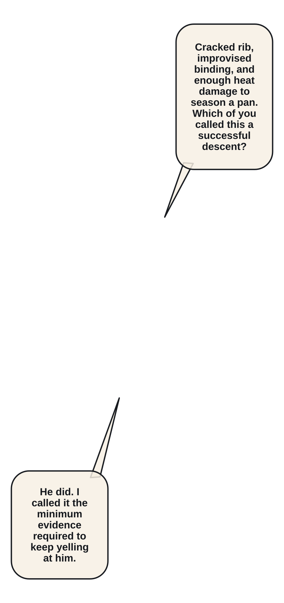
Orin Pell, a broad light-complexioned adult forge-medic, scans Elian's cracked rib through a brass-rimmed monocle.
experiments/reimaginings/ember-lattice/volume/ch03/source/p002.png
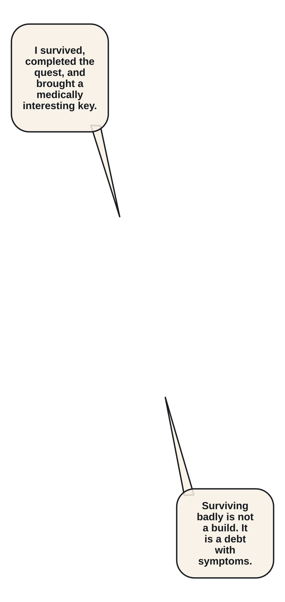
Orin tells Elian that surviving badly is not a build while Mira inventories the remaining medical stock.
experiments/reimaginings/ember-lattice/volume/ch03/source/p003.png
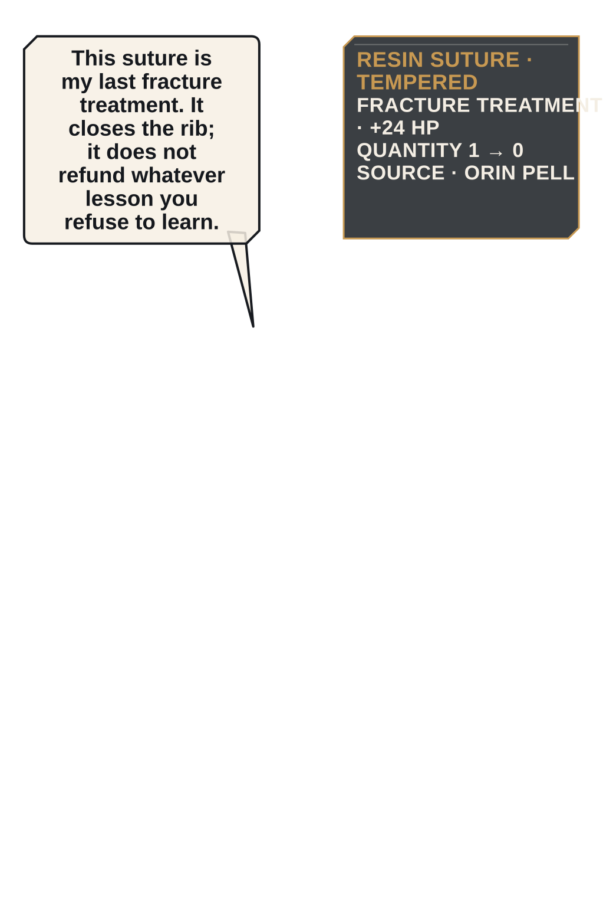
A Resin Suture closes the fracture under Orin's gloved hands; the item counter falls to zero.
experiments/reimaginings/ember-lattice/volume/ch03/source/p004.png
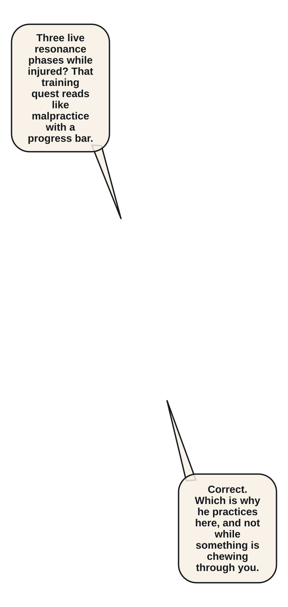
The Ledger offers Three Breaths: hold Pressure Breath through a live resonance without abandoning formation.
experiments/reimaginings/ember-lattice/volume/ch03/source/p005.png
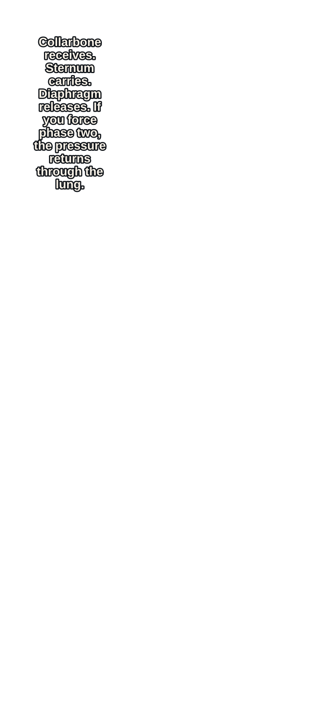
Orin demonstrates collarbone, sternum, and diaphragm timing with three restrained hand taps.
experiments/reimaginings/ember-lattice/volume/ch03/source/p006.png
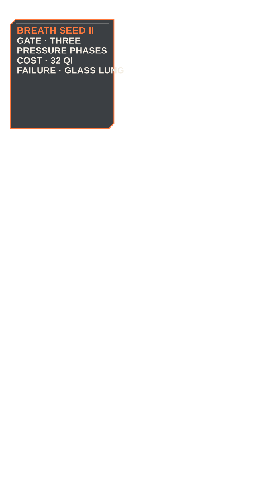
A cultivation menu shows Breath Seed II, the three-phase gate, 32 Qi cost, Glass Lung risk, and 52 max Qi.
experiments/reimaginings/ember-lattice/volume/ch03/source/p007.png
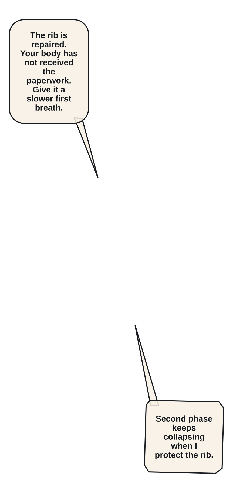
Elian's first practice breath breaks on the second phase and he coughs into his wrapped hand.
experiments/reimaginings/ember-lattice/volume/ch03/source/p008.png
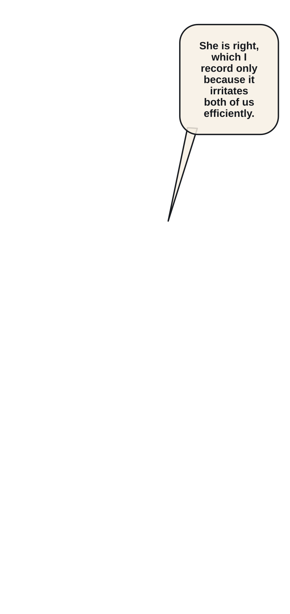
Mira quietly resets his shoulders while Orin refuses to reduce the gate.
experiments/reimaginings/ember-lattice/volume/ch03/source/p009.png
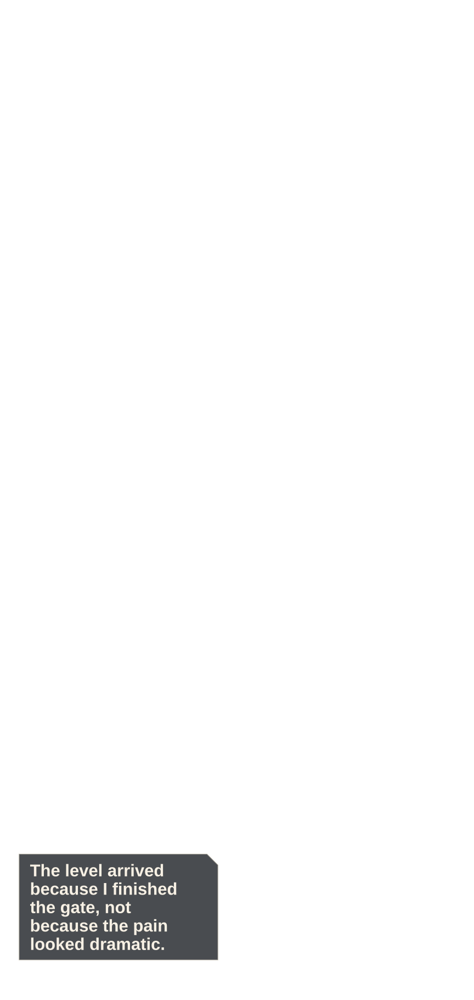
Training completion tips Elian across Level 5; one unspent point remains visibly unallocated.
experiments/reimaginings/ember-lattice/volume/ch03/source/p010.png
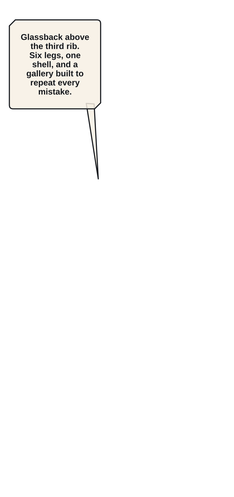
A six-legged Glassback Skitter drops from a mineral rib, its transparent wedge carapace catching one pale edge.
experiments/reimaginings/ember-lattice/volume/ch03/source/p011.png
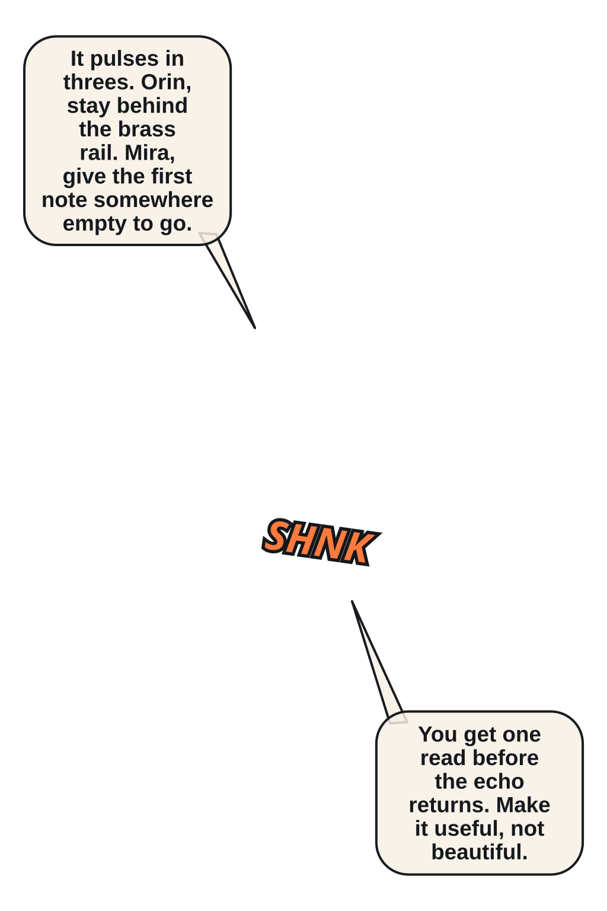
Wide geometry fixes the Skitter ahead, Mira at the brass rail, Elian left, and Orin behind cover.
experiments/reimaginings/ember-lattice/volume/ch03/source/p012.png
The Skitter emits the first of three flat resonance arcs through the narrow gallery.
experiments/reimaginings/ember-lattice/volume/ch03/source/p013.png
Mira angles her shield so the arc exits into an empty mineral bay.
experiments/reimaginings/ember-lattice/volume/ch03/source/p014.png
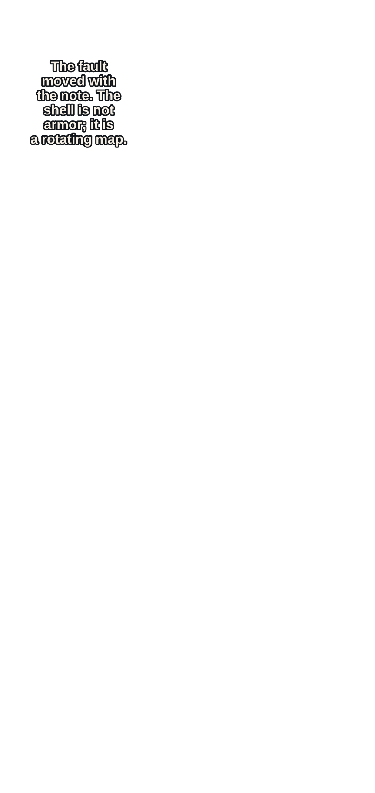
Elian reads a bright fault beneath the carapace, but it shifts with the creature's second note.
experiments/reimaginings/ember-lattice/volume/ch03/source/p015.png
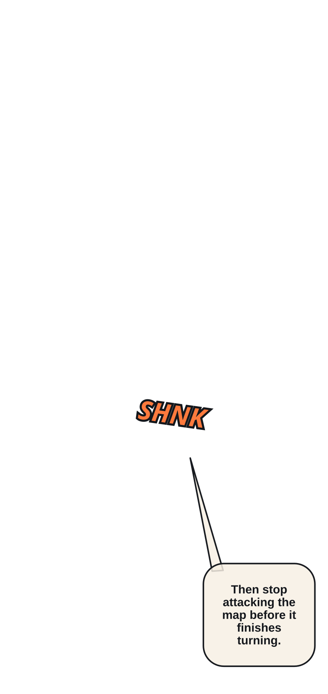
His hookblade strikes empty glass as the weak point migrates to the opposite leg.
experiments/reimaginings/ember-lattice/volume/ch03/source/p016.png
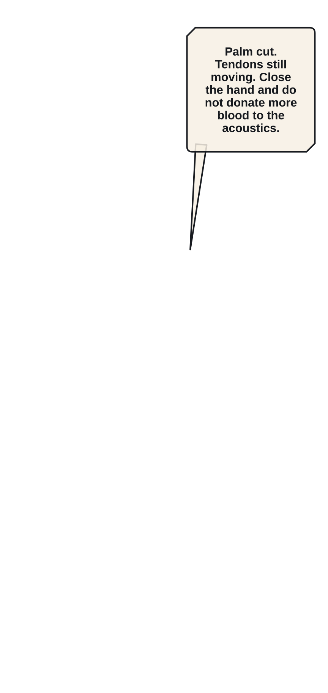
The third resonance shatters the rail and slices Elian's right palm through his glove.
experiments/reimaginings/ember-lattice/volume/ch03/source/p017.png
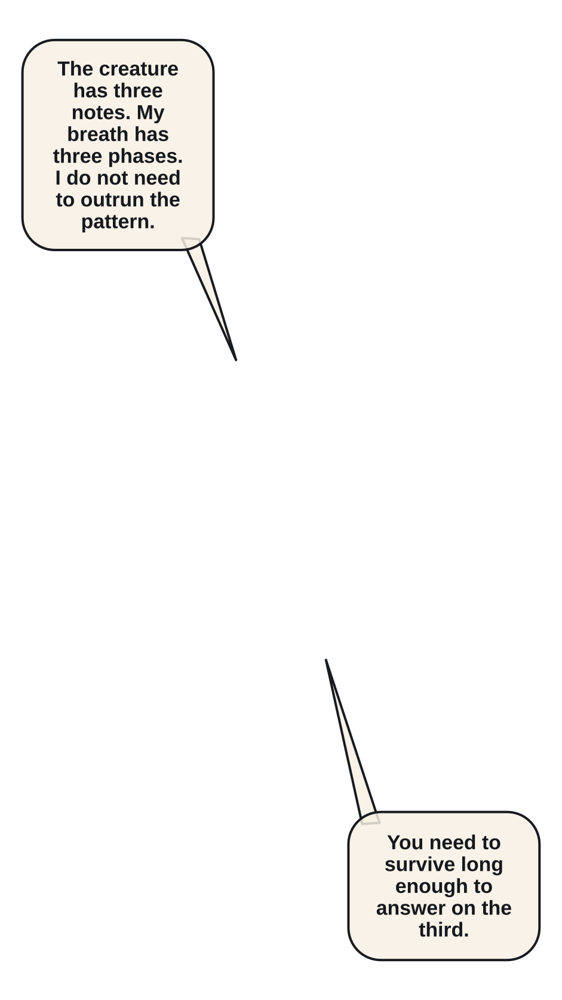
Elian holds the injured hand closed and matches the three-note cadence with Pressure Breath.
experiments/reimaginings/ember-lattice/volume/ch03/source/p018.png
Breath Seed III opens in one thin collarbone-to-sternum line while glass fragments hang in quiet negative space.
experiments/reimaginings/ember-lattice/volume/ch03/source/p019.png
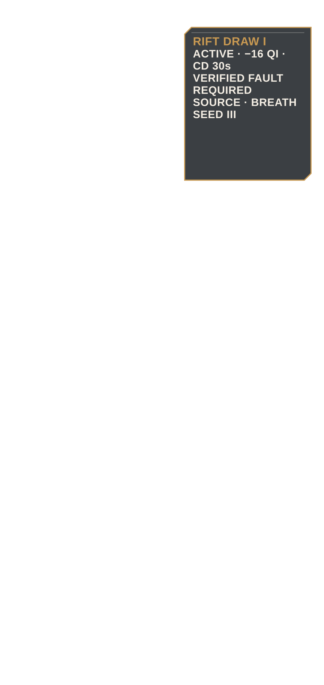
Rift Draw I unlocks with exact cost, cooldown, fault condition, and Seed III source.
experiments/reimaginings/ember-lattice/volume/ch03/source/p020.png
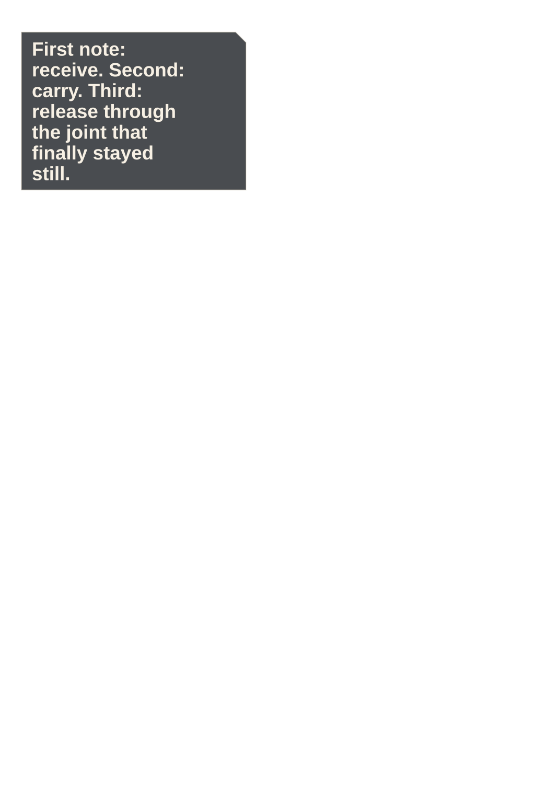
Elian waits through the first two notes and draws the hookblade only when the third exposes the fixed rear joint.
experiments/reimaginings/ember-lattice/volume/ch03/source/p021.png
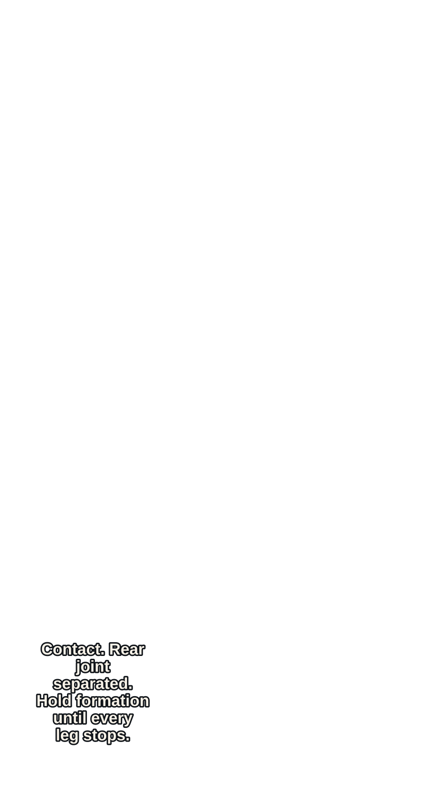
One clean ember arc crosses the rear joint; the Glassback collapses away from Mira and Orin.
experiments/reimaginings/ember-lattice/volume/ch03/source/p022.png
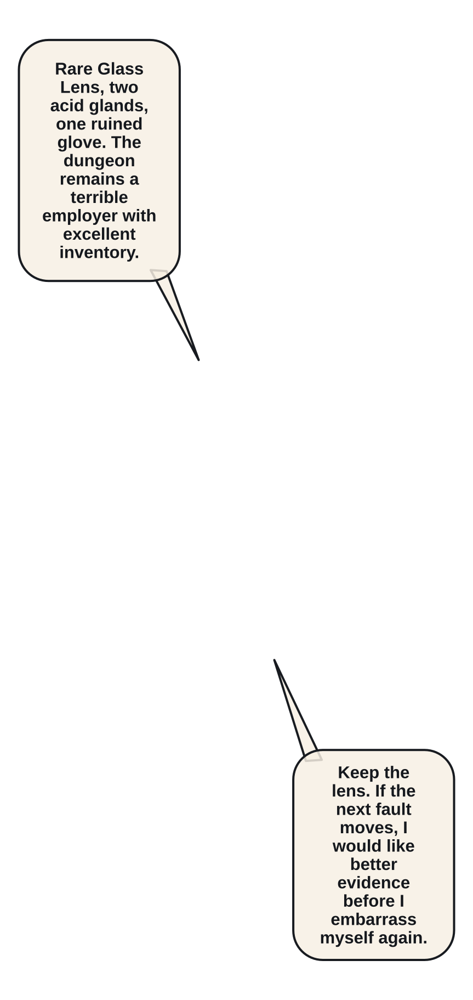
The Rare Glass Lens and two Verdigris Acid Glands appear beside Elian's bloodied palm wrap.
experiments/reimaginings/ember-lattice/volume/ch03/source/p023.png
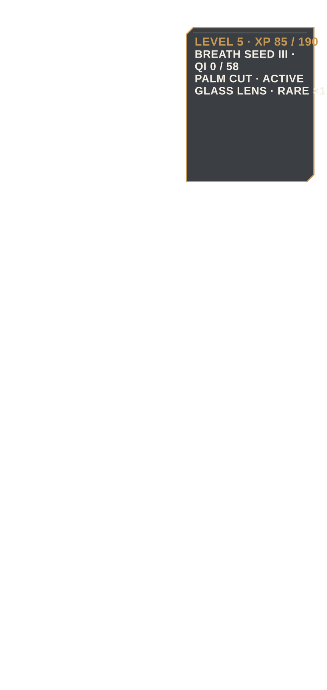
Level 5, 85/190 XP, Seed III, zero Qi, injuries, loot, and quest completion reconcile before the descent.
experiments/reimaginings/ember-lattice/volume/ch03/source/p024.png